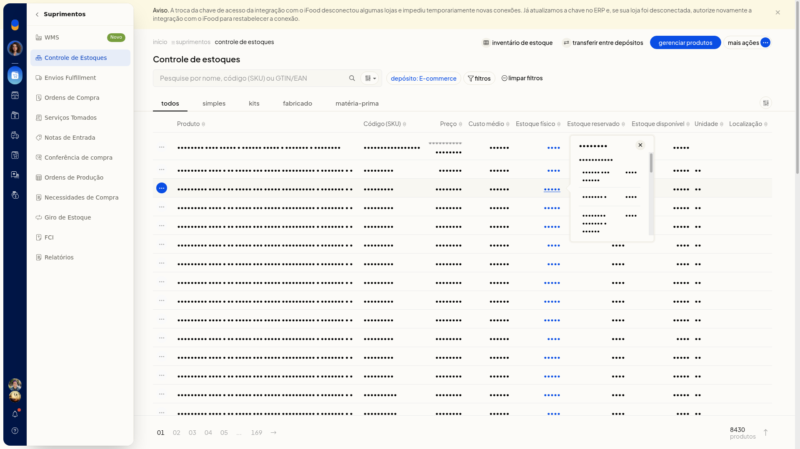
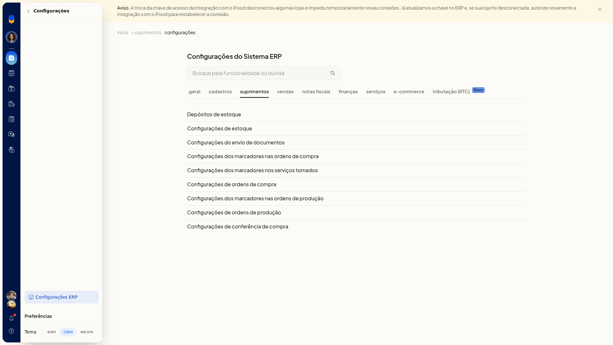
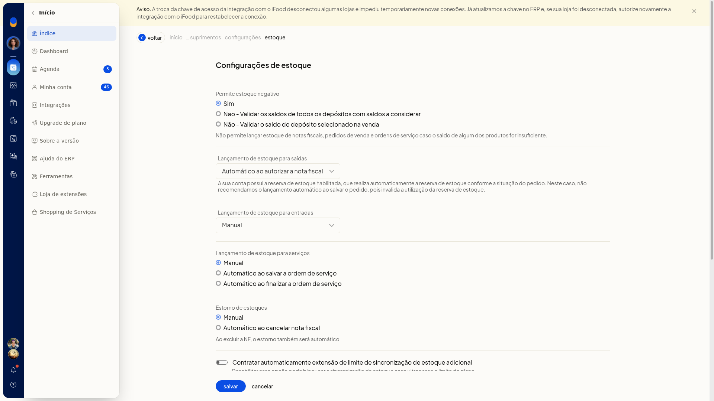

Reserva de estoque
No ERP da Olist, a reserva de estoque separa a quantidade já comprometida pelos pedidos. Em Suprimentos > Controle de Estoques, você consulta o estoque físico, o estoque reservado e o estoque disponível.
A reserva já fica habilitada na conta e acontece automaticamente conforme a situação do pedido. Em Configurações de estoque, você define o momento do lançamento das saídas sem invalidar essa reserva.
Importante
- Não escolha Automático ao salvar o pedido em Lançamento de estoque para saídas. Com a reserva habilitada, essa opção invalida a reserva de estoque.
Instruções
Consultar saldo reservado e disponível
-
Acesse Suprimentos > Controle de Estoques.
-
Na lista, leia Estoque físico, Estoque reservado e Estoque disponível.

-
Clique no valor de Estoque físico para ver a divisão do saldo físico por depósito no painel Detalhes. Estoque reservado e Estoque disponível não abrem esse painel.

Definir o lançamento das saídas
-
Acesse Configurações > Configurações ERP > Suprimentos > Configurações de estoque.

-
Em Lançamento de estoque para saídas, escolha o momento do lançamento. O campo não é obrigatório. As opções são Manual, Automático ao autorizar a nota fiscal, Automático ao salvar a nota fiscal, Automático ao salvar o pedido e Automático ao marcar pedido como enviado.

-
Leia o aviso de que a reserva de estoque está habilitada e reserva automaticamente conforme a situação do pedido. Não use Automático ao salvar o pedido, para a reserva continuar válida.
Resultado
Na lista de Controle de Estoques, você vê quanto está físico, quanto está reservado e quanto está disponível. O detalhe por depósito aparece só a partir do estoque físico. Em Configurações de estoque, o momento do lançamento das saídas fica definido junto da reserva automática já habilitada.
Informações adicionais
- A reserva de estoque já vem habilitada na conta. Não há, nesta tela, um controle para ligar ou desligar a reserva.
- O estoque disponível é o estoque físico menos as reservas.
- O mesmo aviso de reserva aparece em Lançamento de estoque para saídas nas regras de estoque da integração. Lá, você pode manter Usar configuração padrão da conta ou escolher outro momento, sem usar Automático ao salvar o pedido.